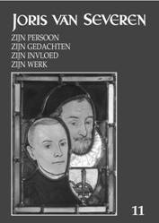

> jaarboek > 2007

Jaarboek
Joris van Severen
–
deel 11 (2007)
Een blik op de inhoudstafel van dit elfde
jaarboek laat opnieuw een wel
zeer verscheiden inhoud vermoeden. En dit is inderdaad ook het geval.
We
ontmoeten er Joris van Severen – en zijn beweging - zowel in de intieme
als in
de openbare sferen van hun bestaan. Komen achtereenvolgens onder de
schijnwerper te staan:
- Dit 11e
jaarboek opent met het breedvoerig colloquiumreferaat van Kurt Ravyts,
dat nog niet eerder aan publicatie toekwam. Het handelt over De literaire voorkeuren van Joris van Severen
tijdens de Eerste Wereldoorlog. De
lezer krijgt meteen een gedegen toelichting bij heel wat passages uit Die vervloekte oorlog, Van Severens oorlogsdagboek, dat
we in 2005 publiceerden. Het zal er ongetwijfeld velen toe aanzetten
met vrucht terug te grijpen naar deze publicatie.
- Over
het reilen en zeilen van het Verdinaso-Nederland is totnogtoe bitter
weinig gepubliceerd. In dit jaarboek brengt Ruud Bruijns daar
verandering in met zijn essay over de Dinaso-studentenactie
in Nederland. Een
zonder meer als pionierswerk te beschouwen studie, waaruit blijkt
hoezeer ook het Verdinaso-Nederland zijn wortels had in de katholieke
“herstelbewegingen” van het interbellum.
- Met De slag om Poperinge, van
de hand van Kristof Papin,
maken we kennis met een
episode uit de vroege geschiedenis van het Verdinaso. Concreet situeert
dit verhaal zich rond de strijd om de zeggingschap over de zogenaamde
Vlaamse Huizen, waarbij het er soms hard tegen hard aan toe ging. Dit
soort micro-onderzoek, dat onder meer inzicht biedt in de innerlijke
keuken van het tussenoorlogse Vlaams-nationalisme, en het grote
ideële
verhaal vaak tot een verhaal van “kleine” mensen herleidt, valt al te
vaak tussen de plooien van de geschiedschrijving door.
- In de Nieuwsbrief Joris van Severen vestigde Piet
Tommissen destijds reeds de aandacht op het socialistische
tijdschrift Schakels. In Het
Verdinaso in de optiek van ‘Schakels’- andermaal gaat
de auteur in op de wijze waarop Henk Brugmans toen poogde in contact te
komen met Joris van Severen. Voor het jaarboek hernam de auteur dit
thema in een breder perspectief, waarbij hij meteen bredere horizonten
opent voor verder onderzoek.
- In de
afsluitende bijdrage laten we de betreurde Jef Werkers
aan het woord, in zijn zoektocht naar het antwoord op de taaie legende
omtrent de beruchte aan Joris van Severen toegeschreven kreet in het
Belgische parlement over “La Belgique? –
Qu’elle crève!” die ooit – naar de
legende het
wil – zou weerklonken hebben in het Belgische parlement.
- Het
gedicht dat traditioneel het jaarboek afsluit is van de hand van Henri
Bruning en kreeg als titel In
Memoriam Joris van Severen.
We maken
van de gelegenheid
tevens gebruik om uw aandacht te vragen voor het 5e
Colloquium Joris van Severen, dat zal doorgaan op
zaterdag 6 oktober a.s. in de Benedictijnerabdij ‘Zevenkerken’ nabij
Brugge, waarover méér hoger in deze Nieuwsbrief.
______________________
N.a.v. Jaarboek
Joris van
Severen 11 (2007); uitgegeven door het Studiecentrum Joris van
Severen.
Gen., 208 pp., ISBN 978-90-76057-10-1. Ledenprijs: 25 €; niet-leden: 30
€ (+ 3
€ verzendkosten).